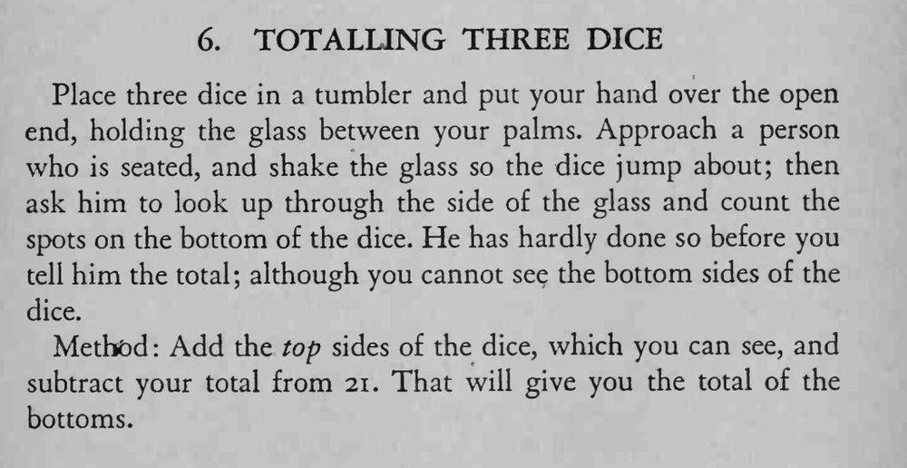

魔术师把三枚骰子装在平底杯里摇动，请观众从杯侧数出杯底的点数；他看不见杯底，却能立刻报出底面点数之和。
骰子顶面与底面之和恒为 7，三枚合计 21；记住顶面再减，动作要快。

Place three dice in a tumbler and put your hand over the open end, holding the glass between your palms. Approach a person who is seated, and shake the glass so the dice jump about; then ask him to look up through the side of the glass and count the spots on the bottom of the dice. He has hardly done so before you tell him the total; although you cannot see the bottom sides of the dice. Method Add the top sides of the dice, which you can see, and subtract your total from 21. That will give you the total of the bottoms.